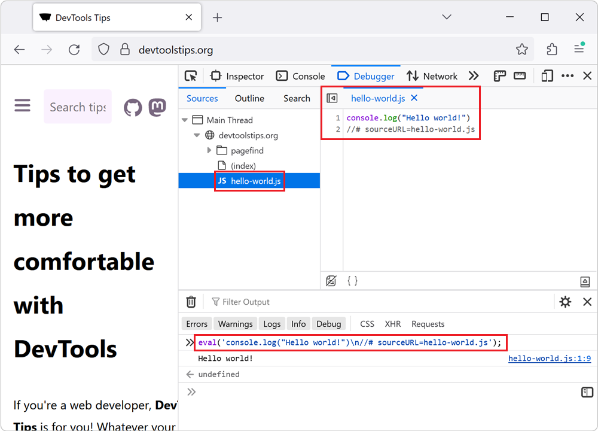

23 Debug tips
-
Override source files to test changes in the browser
It can be helpful to make quick changes to the source code that a site uses, especially when debugging a site in production. For example, if you suspect that a bug is caused by a specific line of code... Read more
-
Find why a CSS property is overridden
In CSS, the cascade plays a very important role in which CSS properties apply to an element. This key concept is not explained here, but you can learn more on MDN, at Cascade, specificity, and inherit... Read more
-
Name evaluated files with the sourceURL pragma

If you insert JavaScript code in a webpage by using the eval() function, or inline <script> tags, you can use the sourceURL pragma to give them a name in DevTools. For example, when using eval()... Read more
-
List all event listeners on the entire page
 When you don't know a codebase, it might be hard to know where to get started, and what events are being listened to by which elements. The Console tool, in Chromium-based browsers, comes with a nice... Read more
When you don't know a codebase, it might be hard to know where to get started, and what events are being listened to by which elements. The Console tool, in Chromium-based browsers, comes with a nice... Read more -
Debug popups that appear on hover
 As described in Debug popups that appear on hover using JS and in Debug popups that appear on hover using the debugger statement, there are ways to debug popups that appear on hover using JavaScript.... Read more
As described in Debug popups that appear on hover using JS and in Debug popups that appear on hover using the debugger statement, there are ways to debug popups that appear on hover using JavaScript.... Read more -
Force execution, skipping breakpoints, when paused
 When using breakpoints to debug your JavaScript code, sometimes you end up setting many breakpoints in different functions. You might want to keep these breakpoints but not always pause at them. There... Read more
When using breakpoints to debug your JavaScript code, sometimes you end up setting many breakpoints in different functions. You might want to keep these breakpoints but not always pause at them. There... Read more -
See the viewport size
 The size of the viewport that's used to render a webpage in a browser can be very important at times, such as when creating or debugging media queries. You can easily know what the current size of the... Read more
The size of the viewport that's used to render a webpage in a browser can be very important at times, such as when creating or debugging media queries. You can easily know what the current size of the... Read more -
Find the CSS rule that causes a specific style to apply
 Here is the scenario: you know there's a specific style that applies to an HTML element in your web page, say some padding, but you can't seem to find where, in the CSS code, that style is coming from... Read more
Here is the scenario: you know there's a specific style that applies to an HTML element in your web page, say some padding, but you can't seem to find where, in the CSS code, that style is coming from... Read more -
Inspect and debug iframes
 If the page you are working on contains an iframe which you want to inspect and debug, you can actually use DevTools to do so. This can be very useful when working with coding playground sites like Co... Read more
If the page you are working on contains an iframe which you want to inspect and debug, you can actually use DevTools to do so. This can be very useful when working with coding playground sites like Co... Read more -
View console logs from non-Safari browsers on an iPhone
 Using the about:inspect special page you can see your website's logs in Chrome or Edge running on iPhone! This is important because debugging a webpage that's running in Safari on an iPhone isn't hard... Read more
Using the about:inspect special page you can see your website's logs in Chrome or Edge running on iPhone! This is important because debugging a webpage that's running in Safari on an iPhone isn't hard... Read more -
Disable abusive debugger statements that prevent inspecting websites
 Some websites make it impossible to use DevTools by adding debugger statements in their code. The statements don't do anything for normal users, but as soon as DevTools is opened, the JavaScript execu... Read more
Some websites make it impossible to use DevTools by adding debugger statements in their code. The statements don't do anything for normal users, but as soon as DevTools is opened, the JavaScript execu... Read more -
Manipulate global objects on page load, before other scripts run
 When a page loads, and all of its global objects are ready, but before the JavaScript code of the page actually kicks-in, is a great time to inject debugging code. For example, it might be useful to r... Read moreCategories: Supported by:
When a page loads, and all of its global objects are ready, but before the JavaScript code of the page actually kicks-in, is a great time to inject debugging code. For example, it might be useful to r... Read moreCategories: Supported by: -
Find inactive CSS styles
 Sometimes we write CSS code that's entirely valid but has absolutely no effect at all, and this can be frustrating. Indeed, there are many cases where a CSS declaration has no effect on an element. On... Read more
Sometimes we write CSS code that's entirely valid but has absolutely no effect at all, and this can be frustrating. Indeed, there are many cases where a CSS declaration has no effect on an element. On... Read more -
Debug popups that appear on hover using the debugger statement
In Debug popups that appear on hover using JS we described how to pause the debugger to inspect popups that appear on hover and disappear as soon as the cursor moves away. Here's another way to do thi... Read more
-
Simulate pseudo CSS classes
 If you use :hover, :active, or other pseudo-classes in your CSS code, it can be tedious to test them. For example, having to hover over an element which is styled with the :hover pseudo-class means th... Read more
If you use :hover, :active, or other pseudo-classes in your CSS code, it can be tedious to test them. For example, having to hover over an element which is styled with the :hover pseudo-class means th... Read more -
Cut down on console noise using live expressions
 Using the Console of DevTools to log information that changes a lot is a bad idea. First of all, you flood it with information. Secondly, it can impact the performance of your product. And last but no... Read more
Using the Console of DevTools to log information that changes a lot is a bad idea. First of all, you flood it with information. Secondly, it can impact the performance of your product. And last but no... Read more -
Console.log() for the web with logpoints
 Using the console to log some information is a very common way to debug your JavaScript. But you can also log information in any web site using Logpoints in the sources panel. Here's how to do it: I... Read more
Using the console to log some information is a very common way to debug your JavaScript. But you can also log information in any web site using Logpoints in the sources panel. Here's how to do it: I... Read more -
Debug popups that appear on hover using JS
 Have you ever been frustrated because you couldn't style a popup or tooltip that appeared on hover? If it uses JavaScript to get displayed, it's hard to style without modifying the code to make it sta... Read more
Have you ever been frustrated because you couldn't style a popup or tooltip that appeared on hover? If it uses JavaScript to get displayed, it's hard to style without modifying the code to make it sta... Read more -
Monitor all events dispatched on an element
 You can use the monitorEvents global function in the Console panel to log all of the events dispatched on a particular element. Select an element in the Elements panel. Go to the Console. Type monito... Read more
You can use the monitorEvents global function in the Console panel to log all of the events dispatched on a particular element. Select an element in the Elements panel. Go to the Console. Type monito... Read more -
Pause script execution when the DOM changes
 If you want to know what JavaScript code removes, adds, or modifies a DOM element in the page, you can use DOM breakpoints in DevTools. You can choose to break on: Subtree modification: this pauses e... Read more
If you want to know what JavaScript code removes, adds, or modifies a DOM element in the page, you can use DOM breakpoints in DevTools. You can choose to break on: Subtree modification: this pauses e... Read more -
Play a sound when a line of JavaScript is executed
 Sometimes pausing execution when a line of JavaScript is executed is too much, sometimes you only want to know that the line was executed at all, not pause there. To do this you can add console.log()... Read moreCategories: Supported by:
Sometimes pausing execution when a line of JavaScript is executed is too much, sometimes you only want to know that the line was executed at all, not pause there. To do this you can add console.log()... Read moreCategories: Supported by: -
Unminify JavaScript code to easily read and debug it
 Sometimes, the JavaScript code that runs on a website is minified and really hard to read. This is common in production. You can unminify code in DevTools to read it more easily, and also set breakpoi... Read more
Sometimes, the JavaScript code that runs on a website is minified and really hard to read. This is common in production. You can unminify code in DevTools to read it more easily, and also set breakpoi... Read more -
Use the debugger statement to pause script execution
 If you prefer to use console.log() statements rather than the JavaScript debugger because you find it difficult to set breakpoints in DevTools (or you can't), then you can use the debugger statement i... Read more
If you prefer to use console.log() statements rather than the JavaScript debugger because you find it difficult to set breakpoints in DevTools (or you can't), then you can use the debugger statement i... Read more
 edge
edge
 chrome
chrome
 firefox
firefox
 safari
safari
 polypane
polypane